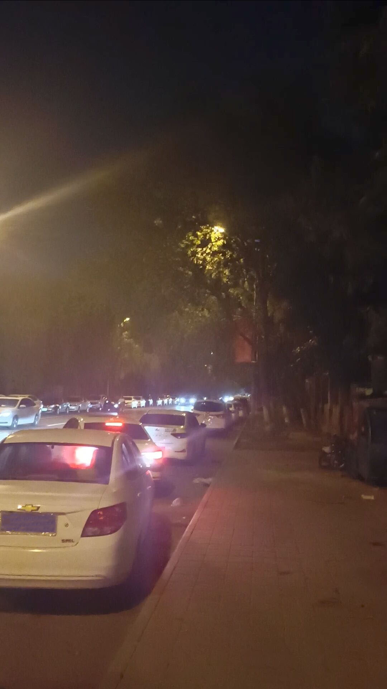
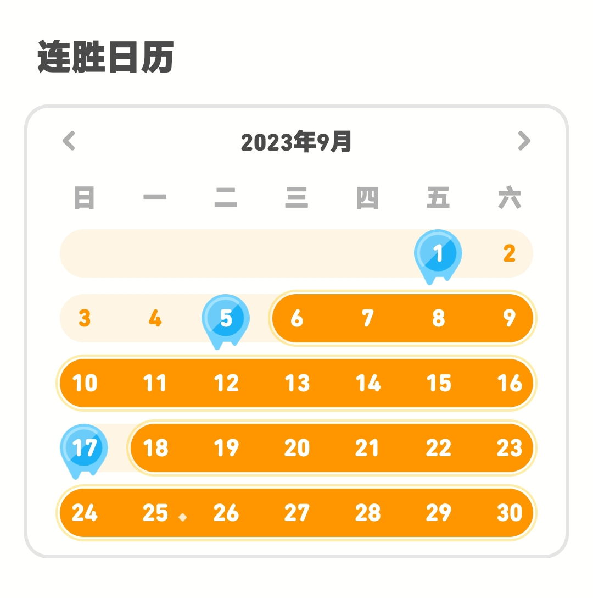
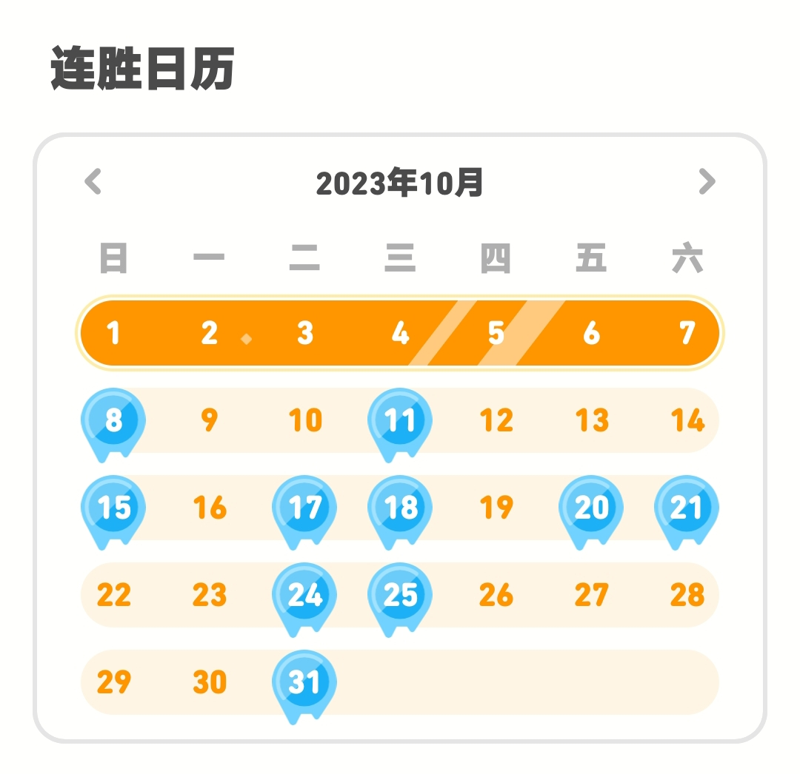

妈呀怎么有人周报隔两个月一写啊😱 #
我擦我怎么用markdown都忘了
让我好好回忆一下都发生了什么……..

只剪了两个视频，无论从哪方面来说九月十月确实是摸的不行了，但是十一月确实是很充实。
也不知是何时想开了，现在的心态很轻松：视频为自己而做，只做自己开心的视频。
播放量点赞率创作激励 I Don’t Fucking Care
ダラダラした生活 #
七月底我收到了哥们的消息，恰逢实习需求紧迫、在家里活不下去了，没做什么准备就买了车票。
投了很多简历、联系了很多人、每天都在循环：
我草我到底能找到工作吗 — 没钱了要活不下去了 — 再要点生活费？还是等等吧 — 我必须学日语
在无穷的自我内耗中，我—— 没啥事，最后通过力大砖飞的方式找到工作了
心态真好吧😅？愣是自我调节好了。
找到工作自然已是八月初。
八月中旬被开除，后续也没再成功找到工作。
我在逃避那辆城际公交车？那个城市？还是我自己？

九月属于是强撑着签到，每天撑死几分钟就完事；十月属于是直接完了，经常的会忘
钱没攒到、活得不快乐、自我提升约等于0。
九月底回的家，九月一整月都在出租屋思考人生（笑
迷茫从睁眼看到天花板开始到四周伸手不见五指为止，最终还是在十月初妥协回家了。这次一共两个月的时间也没经历多少事情，更没有什么深刻的感想。
郊区的位置很偏远、如同我离文明的距离那样远；四小时的颠簸很漫长、车和车上的人都被粘在高速公路上；时常感叹城市之大却无我一席之地、最后惊觉这里根本不是我的故乡。
日本語の勉強！ #
九月中旬时联系了一位日语老师。但我还没有想好要不要跟人家学。或者是我没有自信掏出足够的钱吧
十一月在家里找了工作 算是步入正轨了，工资也刚好够日语课的钱，工作量也很合适。于是选择跟老师学习。
这个月学习进步工作轻松、家中没啥能说我的地方，我何而不乐呢？
我完全依靠自己建立了符合大多数人的三观、催生出自恋而保护自己的精神、努力摆脱尚未成熟时蒙蔽在头顶的阴影、确立明确的人生目标、拥有一定明辨是非的能力，我没觉得上述原生家庭给我有什么积极影响。
机心太重、总是怕棋差一步的我，可以说是草率的决定了学校的选择。学校的选择真的没那么大差距。下面是一篇击碎了我的机心的评论：
As I sift through the myriad of reviews for [已删除], it’s clear that the narrative is often clouded by inaccurate, entitled, and sometimes blatantly false complaints. A large number of 1-star reviews seem to miss the most basic realities of adapting to life and education in Japan. The Takadanobaba campus, for instance, has been wrongly criticized for its university-centric approach, despite this being the explicit focus of that particular campus. It’s unfair to blame the school for students’ lack of due diligence in researching their chosen campus.
It’s paradoxical to see grievances about the lack of English-speaking staff at a Japanese language school in Japan. The expectation for English support in this context is not only entitled but also misses the point of immersion in a language learning environment. Similarly, complaints about basic administrative practices like fee payments and attendance monitoring are unwarranted. These are not only standard procedures but also legal obligations in Japan, which the school is required to follow.
On to the school itself, and my personal perspective: I’ve given [已删除] a 5-star rating solely to offset the unjust negative reviews, but a more accurate rating would be 3.5 to 4 stars. While the faculty’s dedication is commendable, the curriculum’s lack of focus on conversational Japanese and overemphasis on traditional textbook learning does not take full advantage of being in Japan. It’s disappointing that the school does not encourage more practical use of the language through group work or interactive activities.
Additionally, the school’s marketing of career and life guidance sessions suggests that these are available in the students’ native languages, which is misleading. Instead, these sessions are conducted by the main teachers in Japanese, which can be quite challenging for students who are still acquiring the language. This marketing misstep could be corrected either by providing more accurate information or by actually offering the service as advertised.
The teaching staff is exceptional—energetic, hardworking, and genuinely invested in their students’ learning. However, the rigid program structure limits their ability to fully engage and inspire the students. Furthermore, [已删除] could improve its handling of problematic students who disrupt classes or disrespect teachers, enforcing stricter disciplinary actions when necessary.
In conclusion, while [已删除] has its fair share of issues, many of the complaints lodged against it are baseless, born from malice or ignorance. Prospective students should approach their research thoroughly and set realistic expectations. And while the school has room for improvement, particularly in updating its teaching methods and accurately representing its services, it is, at its core, a solid educational institution.
有了老师辅导后，我对于日语的掌握还是较有把握的。同时确认了学校，心里的其中一个石头放下、现在居然有了一种按部就班、稍有掌握的感觉。